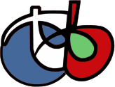
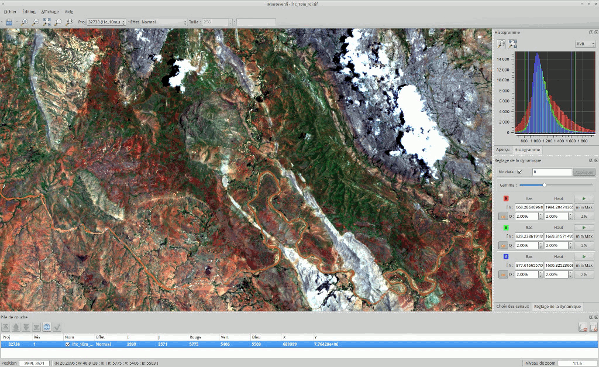

OTB¶
Procesamiento de Imágenes¶
ORFEOToolbox Library (OTB) es una biblioteca de procesamiento de imágenes de alto rendimiento. Se utiliza principalmente para procesar imágenes de gran tamaño de detección remota, como las recopiladas por radares, satélites y fotografías aéreas. OTB proporciona herramientas para imágenes ópticas y de radar (aspectos tridimensionales, segmentación, clasificación, detección de cambios, análisis de textura, coincidencia de patrones y complementariedades óptico/radar), muchas de las cuales se pueden ejecutar en computadoras portátiles con recursos limitados.
OTB también se envía con un conjunto de herramientas extensibles listas para usar para tareas clásicas de teledetección y una aplicación totalmente integrada llamada Monteverdi, que es un visor rápido que permite a los usuarios visualizar varias capas y llamar herramientas de procesamiento OTB desde una entrada de menú .
OTB ha sido financiado por la Agencia Espacial Francesa (CNES) en el marco de la Parte Metodológica del Programa de Acompañamiento ORFEO/Pleiades y se ha desarrollado activamente desde 2006. Se basa en la biblioteca de procesamiento de imágenes ITK y se distribuye como Código Abierto.


Características Principales¶
acceso a la imagen: acceso optimizado de lectura/escritura para la mayoría de los formatos de trama de detección remota (también formatos JPEG2000), acceso y visualización de metadatos;
ortorectificación utilizando DEM, reproyección del mapa y refinamiento del modelo del sensor
óptica y calibración de SAR
fusión de imágenes
filtrado: desenfoque, eliminación de ruido, mejora …
extracción de características: puntos de interés, alineaciones, líneas …
detección de objetos
segmentación de imágenes a gran escala: crecimiento de la región, cambio de medias, cuenca hidrográfica, conjuntos de niveles …
marco de selección de muestra para la formación
clasificación: algoritmos supervisados y no supervisados procedentes de OpenCV, Shark, libSVM o implementaciones personalizadas (K-means, campos aleatorios de Markov, SVM, Random Forest, …)
regression using machine learning methods from OpenCV (SVM, Random Forest, …)
análisis de imágenes basado en objetos
Análisis geoespacial
reconstrucción estereoscópica a partir de imágenes ópticas
Análisis de datos SAR: calibración, análisis de polarimetría
detección de cambios.
Detalles¶
Sitio web: https://www.orfeo-toolbox.org/
Licencia: Apache v2.0
Versión de software: 8.1.0
Plataformas compatibles: GNU/Linux, Mac OSX, MS Windows
Interfaces API: C++
Soporte Comercial: OSGeo service providers